{kind=link}
options(conflicts.policy = "depends.ok")
devtools::source_url("https://github.com/jjcurtin/lab_support/blob/main/fun_ml.R?raw=true")ℹ SHA-1 hash of file is "175d942e14f108d74912bfb2593b77637328ecb1"tidymodels_conflictRules()Lecture 1: The Bayes Classifier ~ 5 mins
Lecture 2: Conceptual Overview of Logistic Regression ~ 17 mins
Lecture 3: EDA with the Cars Dataset ~17 mins
Lecture 5: KNN with Cars Dataset ~14 mins
Discussion Post questions or discuss readings or lectures on the appropriate Slack channel
Post questions to application_assignments
Submit the application assignment here and complete the unit quiz by 8 pm on Wednesday, February 14th
Our eventual goal in this unit is to build a machine learning classification model that can accurately predict who lived vs. died on the titanic.
To begin, we need to:
options(conflicts.policy = "depends.ok")
devtools::source_url("https://github.com/jjcurtin/lab_support/blob/main/fun_ml.R?raw=true")ℹ SHA-1 hash of file is "175d942e14f108d74912bfb2593b77637328ecb1"tidymodels_conflictRules()library(janitor, include.only = "clean_names")
library(cowplot, include.only = "plot_grid") # for plot_grid()
library(kableExtra, exclude = "group_rows") # exclude dplyr conflict
library(tidyverse) # for general data wrangling
library(tidymodels) # for modelingdevtools::source_url("https://github.com/jjcurtin/lab_support/blob/main/fun_eda.R?raw=true")ℹ SHA-1 hash of file is "c045eee2655a18dc85e715b78182f176327358a7"devtools::source_url("https://github.com/jjcurtin/lab_support/blob/main/fun_plots.R?raw=true")ℹ SHA-1 hash of file is "def6ce26ed7b2493931fde811adff9287ee8d874"theme_set(theme_classic())
options(tibble.width = Inf)path_data <- "./data"First, lets introduce the Bayes classifier, which is the classifier that will have the lowest error rate of all classifiers using the same set of features.
The figure below displays simulated data for a classification problem for K = 2 classes as a function of X1 and X2

The Bayes classifier assigns each observation its most likely class given its conditional probabilities for the values for X1 and X2
The Bayes classifier provides the minimum error rate for test data
Let’s talk now about some of these classification models
Logistic regression (a special case of the generalized linear model) estimates the conditional probability for each class given X (a specific set of values for our features)
We prefer to use logistic regression over the general linear model with unordered categorical outcomes because:
Nonetheless, the general linear model is still used at times to predict binary outcomes (see Linear Probability Model) so you should be aware of it. We won’t discuss it further here.
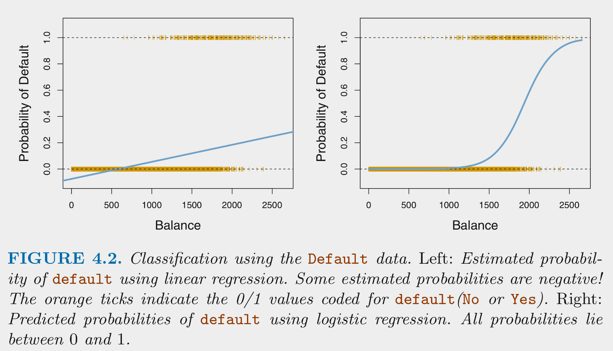
Logistic regression provides predicted conditional probabilities for one class (positive class) for any specific set of values for our features (X)
\(Pr(positive\:class | X) = \frac{e^{\beta_0 + \beta_1*X_1 + \beta_2*X_2 + ... + \beta_p * X_p}}{1 + e^{\beta_0 + \beta_1*X_1 + \beta_2*X_2 + ... + \beta_p * X_p}}\)
These conditional probabilities are bounded by [0, 1]
To maximize accuracy (as per Bayes classifier), we predict the positive case if Pr(positive class | X) > .5 for any specific X, otherwise we predict the negative class
As a simple parametric model, logistic regression is commonly used for explanatory purposes as well as prediction
For these reasons, it is worthwhile to fully understand how to work with the logistic function to quantify and describe the effects of your features/predictors in terms of
The logistic function yields the probability of the positive class given X
However, in some instances, it may make more sense to describe the odds of the positive case occurring (e.g., horse racing) rather than probability
Odds are defined with respect to probabilities as follows:
\(odds = \frac{Pr(positive\:class|X)} {1 - Pr(positive\:class|X)}\)
For example, if the UW Badgers have a .5 probability of winning some upcoming game based on X, their odds of winning are 1 (to 1)
If the UW Badgers have a .75 probability of winning some upcoming game based on X, their odds of winning are 3 (:1; ‘3 to 1’)
If the UW Badgers have a .25 probability of winning some upcoming game based on X, their odds of winning are .33 (1:3)
The logistic function can be modified to provide odds directly:
Logistic function: \(Pr(positive\:class | X) = \frac{e^{\beta_0 + \beta_1*X_1 + \beta_2*X_2 + ... + \beta_p * X_p}}{1 + e^{\beta_0 + \beta_1*X_1 + \beta_2*X_2 + ... + \beta_p * X_p}}\)
Definition of odds:
\(odds = \frac{Pr(positive\:class|X)} {1 - Pr(positive\:class|X)}\)
Substitute logistic function for \(Pr(positive\:class|X)\) on top and bottom and simplify to get:
\(odds(positive\:class|X) = e^{\beta_0 + \beta_1*X_1 + \beta_2*X_2 + ... + \beta_p * X_p}\)
Odds are bounded by [0, \(\infty\)]
The logistic function can be modified further such that the outcome (log-odds/logit) is a linear function of your features
If we take the natural log (base e) of both sides of the odds equation, we get:
\(log(odds(positive\:class|X)) = \beta_0 + \beta_1*X_1 + \beta_2*X_2 + ... + \beta_p * X_p\)
Log-odds are unbounded \([-\infty, \infty]\)
Use of logit transformation provides the connection between the general linear model and generalized linear models (in this case with link = logit, family = binomial). Notice that the logit/log-odds is a linear combination of the features (just like in the general linear model)
Odds and probability are descriptive but they are not linear functions of X
Log-odds are a linear function of X
The odds ratio addresses these problems
Odds are defined at a specific set of values across the features in your model. For example, with one feature:
\(odds = \frac{Pr(positive\:class|x_1)} {1 - Pr(positive\:class|x_1)}\)
The odds ratio describes the change in odds for a change of c units in your feature
With some manipulation:
\(Odds\:ratio = \frac{odds(x+c)}{odds(x)}\)
\(Odds\:ratio = \frac{e^{\beta_0 + \beta_1*(x_1 + c)}}{e^{\beta_0 + \beta_1*x_1}}\)
\(Odds\:ratio = e^{c*\beta_1}\)
As an example, if we fit a logistic regression model to predict the probability of the Badgers winning a home football game given the attendance (measured in individual spectators at the game), we might find \(\beta_1\) = .000075.
Given this, the odds ratio associated with every increase in 10,000 spectators:
Let’s put it all of this together in the cars dataset from Carnegie Mellon’s StatLib Dataset Archive Our goal is to build a classifier (machine learning model for a categorical outcome) that classifies cars as either high or low mpg.
Let’s start with some cleaning EDA
data_all <- read_csv(here::here(path_data, "auto_all.csv"),
col_types = cols()) |>
glimpse()Rows: 392
Columns: 9
$ mpg <chr> "low", "low", "low", "low", "low", "low", "low", "low", "…
$ cylinders <dbl> 8, 8, 8, 8, 8, 8, 8, 8, 8, 8, 8, 8, 8, 8, 4, 6, 6, 6, 4, …
$ displacement <dbl> 307, 350, 318, 304, 302, 429, 454, 440, 455, 390, 383, 34…
$ horsepower <dbl> 130, 165, 150, 150, 140, 198, 220, 215, 225, 190, 170, 16…
$ weight <dbl> 3504, 3693, 3436, 3433, 3449, 4341, 4354, 4312, 4425, 385…
$ acceleration <dbl> 12.0, 11.5, 11.0, 12.0, 10.5, 10.0, 9.0, 8.5, 10.0, 8.5, …
$ year <dbl> 70, 70, 70, 70, 70, 70, 70, 70, 70, 70, 70, 70, 70, 70, 7…
$ origin <dbl> 1, 1, 1, 1, 1, 1, 1, 1, 1, 1, 1, 1, 1, 1, 3, 1, 1, 1, 3, …
$ name <chr> "chevrolet chevelle malibu", "buick skylark 320", "plymou…data_all |> skim_some()| Name | data_all |
| Number of rows | 392 |
| Number of columns | 9 |
| _______________________ | |
| Column type frequency: | |
| character | 2 |
| numeric | 7 |
| ________________________ | |
| Group variables | None |
Variable type: character
| skim_variable | n_missing | complete_rate | min | max | empty | n_unique | whitespace |
|---|---|---|---|---|---|---|---|
| mpg | 0 | 1 | 3 | 4 | 0 | 2 | 0 |
| name | 0 | 1 | 6 | 36 | 0 | 301 | 0 |
Variable type: numeric
| skim_variable | n_missing | complete_rate | p0 | p100 |
|---|---|---|---|---|
| cylinders | 0 | 1 | 3 | 8.0 |
| displacement | 0 | 1 | 68 | 455.0 |
| horsepower | 0 | 1 | 46 | 230.0 |
| weight | 0 | 1 | 1613 | 5140.0 |
| acceleration | 0 | 1 | 8 | 24.8 |
| year | 0 | 1 | 70 | 82.0 |
| origin | 0 | 1 | 1 | 3.0 |
origin is an unordered categorical variable that is coded numeric (where 1 = American, 2 = European, and 3 = Japanese). Let’s recode as character with meaningful labels and then convert to factormgp, origin, and name) to factors.mpg is ordinal, so lets set the levels to indicate the order.data_all <- data_all |>
mutate(origin = case_when(origin == 1 ~ "american",
origin == 2 ~ "european",
origin == 3 ~ "japanese")) |>
mutate(mpg = factor(mpg, levels = c("low", "high")),
origin = factor(origin),
name = factor(name)) |>
glimpse()Rows: 392
Columns: 9
$ mpg <fct> low, low, low, low, low, low, low, low, low, low, low, lo…
$ cylinders <dbl> 8, 8, 8, 8, 8, 8, 8, 8, 8, 8, 8, 8, 8, 8, 4, 6, 6, 6, 4, …
$ displacement <dbl> 307, 350, 318, 304, 302, 429, 454, 440, 455, 390, 383, 34…
$ horsepower <dbl> 130, 165, 150, 150, 140, 198, 220, 215, 225, 190, 170, 16…
$ weight <dbl> 3504, 3693, 3436, 3433, 3449, 4341, 4354, 4312, 4425, 385…
$ acceleration <dbl> 12.0, 11.5, 11.0, 12.0, 10.5, 10.0, 9.0, 8.5, 10.0, 8.5, …
$ year <dbl> 70, 70, 70, 70, 70, 70, 70, 70, 70, 70, 70, 70, 70, 70, 7…
$ origin <fct> american, american, american, american, american, america…
$ name <fct> chevrolet chevelle malibu, buick skylark 320, plymouth sa…name, responses for all other variables are tidydata_all |>
select(where(is.factor)) |>
walk(\(column) print(levels(column)))[1] "low" "high"
[1] "american" "european" "japanese"
[1] "amc ambassador brougham"
[2] "amc ambassador dpl"
[3] "amc ambassador sst"
[4] "amc concord"
[5] "amc concord d/l"
[6] "amc concord dl 6"
[7] "amc gremlin"
[8] "amc hornet"
[9] "amc hornet sportabout (sw)"
[10] "amc matador"
[11] "amc matador (sw)"
[12] "amc pacer"
[13] "amc pacer d/l"
[14] "amc rebel sst"
[15] "amc spirit dl"
[16] "audi 100 ls"
[17] "audi 100ls"
[18] "audi 4000"
[19] "audi 5000"
[20] "audi 5000s (diesel)"
[21] "audi fox"
[22] "bmw 2002"
[23] "bmw 320i"
[24] "buick century"
[25] "buick century 350"
[26] "buick century limited"
[27] "buick century luxus (sw)"
[28] "buick century special"
[29] "buick electra 225 custom"
[30] "buick estate wagon (sw)"
[31] "buick lesabre custom"
[32] "buick opel isuzu deluxe"
[33] "buick regal sport coupe (turbo)"
[34] "buick skyhawk"
[35] "buick skylark"
[36] "buick skylark 320"
[37] "buick skylark limited"
[38] "cadillac eldorado"
[39] "cadillac seville"
[40] "capri ii"
[41] "chevroelt chevelle malibu"
[42] "chevrolet bel air"
[43] "chevrolet camaro"
[44] "chevrolet caprice classic"
[45] "chevrolet cavalier"
[46] "chevrolet cavalier 2-door"
[47] "chevrolet cavalier wagon"
[48] "chevrolet chevelle concours (sw)"
[49] "chevrolet chevelle malibu"
[50] "chevrolet chevelle malibu classic"
[51] "chevrolet chevette"
[52] "chevrolet citation"
[53] "chevrolet concours"
[54] "chevrolet impala"
[55] "chevrolet malibu"
[56] "chevrolet malibu classic (sw)"
[57] "chevrolet monte carlo"
[58] "chevrolet monte carlo landau"
[59] "chevrolet monte carlo s"
[60] "chevrolet monza 2+2"
[61] "chevrolet nova"
[62] "chevrolet nova custom"
[63] "chevrolet vega"
[64] "chevrolet vega (sw)"
[65] "chevrolet vega 2300"
[66] "chevrolet woody"
[67] "chevy c10"
[68] "chevy c20"
[69] "chevy s-10"
[70] "chrysler cordoba"
[71] "chrysler lebaron medallion"
[72] "chrysler lebaron salon"
[73] "chrysler lebaron town @ country (sw)"
[74] "chrysler new yorker brougham"
[75] "chrysler newport royal"
[76] "datsun 1200"
[77] "datsun 200-sx"
[78] "datsun 200sx"
[79] "datsun 210"
[80] "datsun 210 mpg"
[81] "datsun 280-zx"
[82] "datsun 310"
[83] "datsun 310 gx"
[84] "datsun 510"
[85] "datsun 510 (sw)"
[86] "datsun 510 hatchback"
[87] "datsun 610"
[88] "datsun 710"
[89] "datsun 810"
[90] "datsun 810 maxima"
[91] "datsun b-210"
[92] "datsun b210"
[93] "datsun b210 gx"
[94] "datsun f-10 hatchback"
[95] "datsun pl510"
[96] "dodge aries se"
[97] "dodge aries wagon (sw)"
[98] "dodge aspen"
[99] "dodge aspen 6"
[100] "dodge aspen se"
[101] "dodge challenger se"
[102] "dodge charger 2.2"
[103] "dodge colt"
[104] "dodge colt (sw)"
[105] "dodge colt hardtop"
[106] "dodge colt hatchback custom"
[107] "dodge colt m/m"
[108] "dodge coronet brougham"
[109] "dodge coronet custom"
[110] "dodge coronet custom (sw)"
[111] "dodge d100"
[112] "dodge d200"
[113] "dodge dart custom"
[114] "dodge diplomat"
[115] "dodge magnum xe"
[116] "dodge monaco (sw)"
[117] "dodge monaco brougham"
[118] "dodge omni"
[119] "dodge rampage"
[120] "dodge st. regis"
[121] "fiat 124 sport coupe"
[122] "fiat 124 tc"
[123] "fiat 124b"
[124] "fiat 128"
[125] "fiat 131"
[126] "fiat strada custom"
[127] "fiat x1.9"
[128] "ford country"
[129] "ford country squire (sw)"
[130] "ford escort 2h"
[131] "ford escort 4w"
[132] "ford f108"
[133] "ford f250"
[134] "ford fairmont"
[135] "ford fairmont (auto)"
[136] "ford fairmont (man)"
[137] "ford fairmont 4"
[138] "ford fairmont futura"
[139] "ford fiesta"
[140] "ford futura"
[141] "ford galaxie 500"
[142] "ford gran torino"
[143] "ford gran torino (sw)"
[144] "ford granada"
[145] "ford granada ghia"
[146] "ford granada gl"
[147] "ford granada l"
[148] "ford ltd"
[149] "ford ltd landau"
[150] "ford maverick"
[151] "ford mustang"
[152] "ford mustang gl"
[153] "ford mustang ii"
[154] "ford mustang ii 2+2"
[155] "ford pinto"
[156] "ford pinto (sw)"
[157] "ford pinto runabout"
[158] "ford ranger"
[159] "ford thunderbird"
[160] "ford torino"
[161] "ford torino 500"
[162] "hi 1200d"
[163] "honda accord"
[164] "honda accord cvcc"
[165] "honda accord lx"
[166] "honda civic"
[167] "honda civic (auto)"
[168] "honda civic 1300"
[169] "honda civic 1500 gl"
[170] "honda civic cvcc"
[171] "honda prelude"
[172] "maxda glc deluxe"
[173] "maxda rx3"
[174] "mazda 626"
[175] "mazda glc"
[176] "mazda glc 4"
[177] "mazda glc custom"
[178] "mazda glc custom l"
[179] "mazda glc deluxe"
[180] "mazda rx-4"
[181] "mazda rx-7 gs"
[182] "mazda rx2 coupe"
[183] "mercedes benz 300d"
[184] "mercedes-benz 240d"
[185] "mercedes-benz 280s"
[186] "mercury capri 2000"
[187] "mercury capri v6"
[188] "mercury cougar brougham"
[189] "mercury grand marquis"
[190] "mercury lynx l"
[191] "mercury marquis"
[192] "mercury marquis brougham"
[193] "mercury monarch"
[194] "mercury monarch ghia"
[195] "mercury zephyr"
[196] "mercury zephyr 6"
[197] "nissan stanza xe"
[198] "oldsmobile cutlass ciera (diesel)"
[199] "oldsmobile cutlass ls"
[200] "oldsmobile cutlass salon brougham"
[201] "oldsmobile cutlass supreme"
[202] "oldsmobile delta 88 royale"
[203] "oldsmobile omega"
[204] "oldsmobile omega brougham"
[205] "oldsmobile starfire sx"
[206] "oldsmobile vista cruiser"
[207] "opel 1900"
[208] "opel manta"
[209] "peugeot 304"
[210] "peugeot 504"
[211] "peugeot 504 (sw)"
[212] "peugeot 505s turbo diesel"
[213] "peugeot 604sl"
[214] "plymouth 'cuda 340"
[215] "plymouth arrow gs"
[216] "plymouth champ"
[217] "plymouth cricket"
[218] "plymouth custom suburb"
[219] "plymouth duster"
[220] "plymouth fury"
[221] "plymouth fury gran sedan"
[222] "plymouth fury iii"
[223] "plymouth grand fury"
[224] "plymouth horizon"
[225] "plymouth horizon 4"
[226] "plymouth horizon miser"
[227] "plymouth horizon tc3"
[228] "plymouth reliant"
[229] "plymouth sapporo"
[230] "plymouth satellite"
[231] "plymouth satellite custom"
[232] "plymouth satellite custom (sw)"
[233] "plymouth satellite sebring"
[234] "plymouth valiant"
[235] "plymouth valiant custom"
[236] "plymouth volare"
[237] "plymouth volare custom"
[238] "plymouth volare premier v8"
[239] "pontiac astro"
[240] "pontiac catalina"
[241] "pontiac catalina brougham"
[242] "pontiac firebird"
[243] "pontiac grand prix"
[244] "pontiac grand prix lj"
[245] "pontiac j2000 se hatchback"
[246] "pontiac lemans v6"
[247] "pontiac phoenix"
[248] "pontiac phoenix lj"
[249] "pontiac safari (sw)"
[250] "pontiac sunbird coupe"
[251] "pontiac ventura sj"
[252] "renault 12 (sw)"
[253] "renault 12tl"
[254] "renault 5 gtl"
[255] "saab 99e"
[256] "saab 99gle"
[257] "saab 99le"
[258] "subaru"
[259] "subaru dl"
[260] "toyota carina"
[261] "toyota celica gt"
[262] "toyota celica gt liftback"
[263] "toyota corolla"
[264] "toyota corolla 1200"
[265] "toyota corolla 1600 (sw)"
[266] "toyota corolla liftback"
[267] "toyota corolla tercel"
[268] "toyota corona"
[269] "toyota corona hardtop"
[270] "toyota corona liftback"
[271] "toyota corona mark ii"
[272] "toyota cressida"
[273] "toyota mark ii"
[274] "toyota starlet"
[275] "toyota tercel"
[276] "toyouta corona mark ii (sw)"
[277] "triumph tr7 coupe"
[278] "vokswagen rabbit"
[279] "volkswagen 1131 deluxe sedan"
[280] "volkswagen 411 (sw)"
[281] "volkswagen dasher"
[282] "volkswagen jetta"
[283] "volkswagen model 111"
[284] "volkswagen rabbit"
[285] "volkswagen rabbit custom"
[286] "volkswagen rabbit custom diesel"
[287] "volkswagen rabbit l"
[288] "volkswagen scirocco"
[289] "volkswagen super beetle"
[290] "volkswagen type 3"
[291] "volvo 144ea"
[292] "volvo 145e (sw)"
[293] "volvo 244dl"
[294] "volvo 245"
[295] "volvo 264gl"
[296] "volvo diesel"
[297] "vw dasher (diesel)"
[298] "vw pickup"
[299] "vw rabbit"
[300] "vw rabbit c (diesel)"
[301] "vw rabbit custom" name has many different responsesnamedata_all <- data_all |>
select(-name)Finally, let’s make and save our training and validation sets. If we were doing model building for prediction we would also need a test set but we will focus this unit on just selecting the best model but not rigorously evaluating it.
mpgset.seed(20110522)
splits <- data_all |>
initial_split(prop = .75, strata = "mpg")
splits |>
analysis() |>
glimpse() |>
write_csv(here::here(path_data, "auto_trn.csv"))Rows: 294
Columns: 8
$ mpg <fct> high, high, high, high, high, high, high, high, high, hig…
$ cylinders <dbl> 4, 4, 4, 4, 4, 4, 4, 4, 4, 4, 4, 4, 4, 4, 4, 4, 4, 4, 4, …
$ displacement <dbl> 113.0, 97.0, 97.0, 110.0, 107.0, 104.0, 121.0, 97.0, 140.…
$ horsepower <dbl> 95, 88, 46, 87, 90, 95, 113, 88, 90, 95, 86, 90, 70, 76, …
$ weight <dbl> 2372, 2130, 1835, 2672, 2430, 2375, 2234, 2130, 2264, 222…
$ acceleration <dbl> 15.0, 14.5, 20.5, 17.5, 14.5, 17.5, 12.5, 14.5, 15.5, 14.…
$ year <dbl> 70, 70, 70, 70, 70, 70, 70, 71, 71, 71, 71, 71, 71, 71, 7…
$ origin <fct> japanese, japanese, european, european, european, europea…splits |>
assessment() |>
glimpse() |>
write_csv(here::here(path_data, "auto_val.csv"))Rows: 98
Columns: 8
$ mpg <fct> low, low, low, low, low, low, low, low, low, low, low, lo…
$ cylinders <dbl> 8, 8, 8, 8, 8, 6, 6, 6, 6, 8, 8, 4, 4, 4, 8, 8, 8, 4, 8, …
$ displacement <dbl> 350, 304, 302, 440, 455, 198, 200, 225, 250, 400, 318, 14…
$ horsepower <dbl> 165, 150, 140, 215, 225, 95, 85, 105, 100, 175, 150, 72, …
$ weight <dbl> 3693, 3433, 3449, 4312, 4425, 2833, 2587, 3439, 3329, 446…
$ acceleration <dbl> 11.5, 12.0, 10.5, 8.5, 10.0, 15.5, 16.0, 15.5, 15.5, 11.5…
$ year <dbl> 70, 70, 70, 70, 70, 70, 70, 71, 71, 71, 71, 71, 71, 72, 7…
$ origin <fct> american, american, american, american, american, america…[Any concerns about using this training-validation split?].{red} 1
Let’s do some quick modeling EDA to get a sense of the data. We will keep it quick and dirty.
data_trn <- read_csv(here::here(path_data, "auto_trn.csv"),
col_type = cols()) |>
mutate(mpg = factor (mpg, levels = c("low", "high")),
origin = factor(origin)) |>
glimpse()Rows: 294
Columns: 8
$ mpg <fct> high, high, high, high, high, high, high, high, high, hig…
$ cylinders <dbl> 4, 4, 4, 4, 4, 4, 4, 4, 4, 4, 4, 4, 4, 4, 4, 4, 4, 4, 4, …
$ displacement <dbl> 113.0, 97.0, 97.0, 110.0, 107.0, 104.0, 121.0, 97.0, 140.…
$ horsepower <dbl> 95, 88, 46, 87, 90, 95, 113, 88, 90, 95, 86, 90, 70, 76, …
$ weight <dbl> 2372, 2130, 1835, 2672, 2430, 2375, 2234, 2130, 2264, 222…
$ acceleration <dbl> 15.0, 14.5, 20.5, 17.5, 14.5, 17.5, 12.5, 14.5, 15.5, 14.…
$ year <dbl> 70, 70, 70, 70, 70, 70, 70, 71, 71, 71, 71, 71, 71, 71, 7…
$ origin <fct> japanese, japanese, european, european, european, europea…data_trn |> plot_bar("mpg")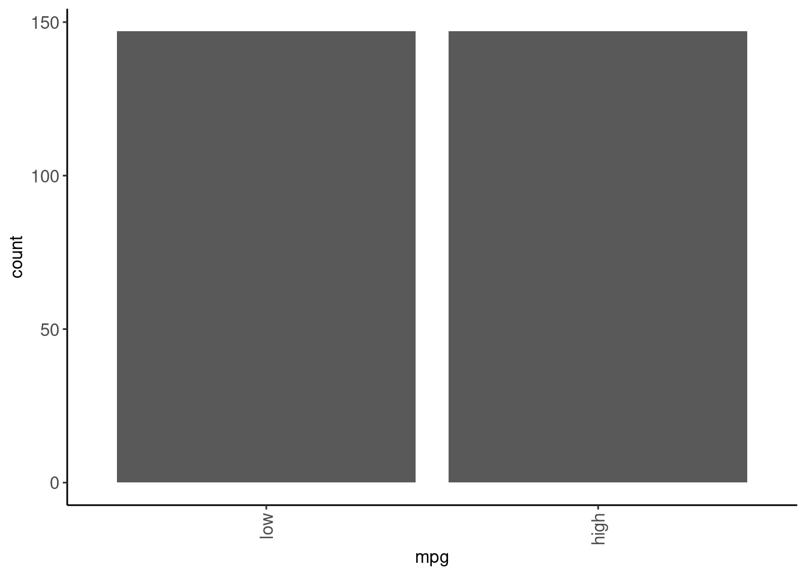
mpg) box/violin plots for numeric predictorsdata_trn |>
select(where(is.numeric)) |>
names() |>
map(~ plot_grouped_box_violin(df = data_trn, x = "mpg", y = .x)) |>
plot_grid(plotlist = _, ncol = 2)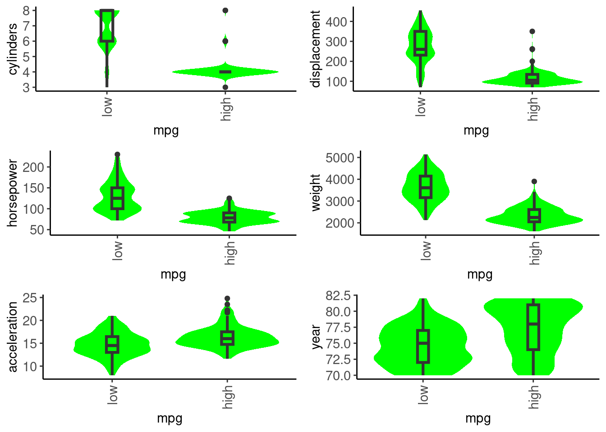
data_trn |>
plot_grouped_barplot_percent(x = "origin", y = "mpg")
data_trn |>
plot_grouped_barplot_percent(x = "mpg", y = "origin")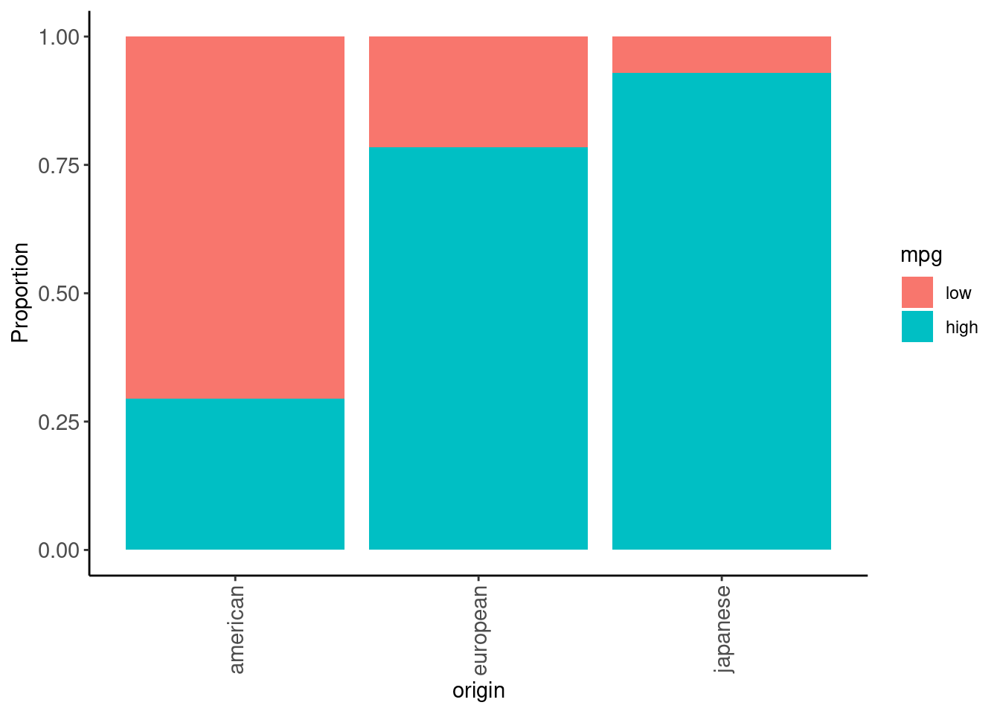
data_trn |>
1 mutate(mpg_high = if_else(mpg == "high", 1, 0),
origin_japan = if_else(origin == "japanese", 1, 0),
origin_europe = if_else(origin == "european", 1, 0)) |>
2 select(-origin, -mpg) |>
cor() |>
3 corrplot::corrplot.mixed()corrplot package

cylinders, displacement, horsepower, and weight are all essentially the same construct (big, beefy car!)mpgNow that we understand our data a little better, let’s build some models
Let’s also try to simultaneously pretend that we:
year - Are we more likely to have efficient cars more recently because of improvements in “technology”, above and beyond broad car characteristics (e.g., the easy stuff like weight, displacement, etc.)To be clear, prediction and explanation goals are often separate (though prediction is an important foundation explanation)
Either way, we need a validation set
data_val <- read_csv(here::here(path_data, "auto_val.csv"),
col_type = cols()) |>
mutate(mpg = factor (mpg, levels = c("low", "high")),
origin = factor(origin)) |>
glimpse()Rows: 98
Columns: 8
$ mpg <fct> low, low, low, low, low, low, low, low, low, low, low, lo…
$ cylinders <dbl> 8, 8, 8, 8, 8, 6, 6, 6, 6, 8, 8, 4, 4, 4, 8, 8, 8, 4, 8, …
$ displacement <dbl> 350, 304, 302, 440, 455, 198, 200, 225, 250, 400, 318, 14…
$ horsepower <dbl> 165, 150, 140, 215, 225, 95, 85, 105, 100, 175, 150, 72, …
$ weight <dbl> 3693, 3433, 3449, 4312, 4425, 2833, 2587, 3439, 3329, 446…
$ acceleration <dbl> 11.5, 12.0, 10.5, 8.5, 10.0, 15.5, 16.0, 15.5, 15.5, 11.5…
$ year <dbl> 70, 70, 70, 70, 70, 70, 70, 71, 71, 71, 71, 71, 71, 72, 7…
$ origin <fct> american, american, american, american, american, america…Let’s predict high mpg from car beefiness and year
We likely want to combine the beefy variables into one construct/factor (beef)
data_trn during prep(). These statistics from data_trn will be used to bake()1rec <- recipe(mpg ~ ., data = data_trn) |>
step_pca(cylinders, displacement, horsepower, weight,
options = list(center = TRUE, scale. = TRUE),
num_comp = 1,
2 prefix = "beef_")
3rec. now in the recipe to leave all variables in the feature matrix. We can later select the ones we want use for prediction
beef_1
beef_ and year
── Recipe ──────────────────────────────────────────────────────────────────────── Inputs Number of variables by roleoutcome: 1
predictor: 7── Operations • PCA extraction with: cylinders, displacement, horsepower, weightNow, prep() the recipe and bake() some feature for training and validation sets
rec_prep <- rec |>
prep(data_trn)
feat_trn <- rec_prep |>
bake(data_trn)
feat_val <- rec_prep |>
bake(data_val)mpg, year, and beef_1 look goodfeat_trn |> skim_all()| Name | feat_trn |
| Number of rows | 294 |
| Number of columns | 5 |
| _______________________ | |
| Column type frequency: | |
| factor | 2 |
| numeric | 3 |
| ________________________ | |
| Group variables | None |
Variable type: factor
| skim_variable | n_missing | complete_rate | n_unique | top_counts |
|---|---|---|---|---|
| origin | 0 | 1 | 3 | ame: 187, jap: 56, eur: 51 |
| mpg | 0 | 1 | 2 | low: 147, hig: 147 |
Variable type: numeric
| skim_variable | n_missing | complete_rate | mean | sd | p0 | p25 | p50 | p75 | p100 | skew | kurtosis |
|---|---|---|---|---|---|---|---|---|---|---|---|
| acceleration | 0 | 1 | 15.54 | 2.64 | 8.00 | 14.00 | 15.50 | 17.0 | 24.80 | 0.24 | 0.58 |
| year | 0 | 1 | 75.94 | 3.68 | 70.00 | 73.00 | 76.00 | 79.0 | 82.00 | 0.03 | -1.17 |
| beef_1 | 0 | 1 | 0.00 | 1.92 | -2.36 | -1.64 | -0.85 | 1.4 | 4.36 | 0.63 | -0.96 |
Fit the model configuration in train
. in our recipe and our datasets have more columns.
Let’s look at the logistic model and its parameter estimates from train
fit_lr_2 |> tidy()# A tibble: 3 × 5
term estimate std.error statistic p.value
<chr> <dbl> <dbl> <dbl> <dbl>
1 (Intercept) -23.4 5.55 -4.23 2.38e- 5
2 beef_1 -2.49 0.316 -7.87 3.49e-15
3 year 0.292 0.0718 4.07 4.71e- 5\(Pr(high|(beef, year)) = \frac{e^{b0 + b1*beef + b2*year}}{1 + e^{b0 + b1*beef + b2*year}}\)
Use predict() to get these probabilities (or predicted class, more on that later) directly from the model for any data
predict() returns probabilities for high and low. We will select out the low columns1p_high <-
tibble(year = seq(min(feat_val$year), max(feat_val$year), .1),
beef_1 = mean(feat_val$beef_1))
2p_high <- p_high |>
bind_cols(predict(fit_lr_2, new_data = p_high, type = "prob")) |>
bind_cols(predict(fit_lr_2, new_data = p_high, type = "conf_int")) |>
select(-.pred_low, -.pred_lower_low, -.pred_upper_low) |>
glimpse()Rows: 121
Columns: 5
$ year <dbl> 70.0, 70.1, 70.2, 70.3, 70.4, 70.5, 70.6, 70.7, 70.8,…
$ beef_1 <dbl> 0.008438869, 0.008438869, 0.008438869, 0.008438869, 0…
$ .pred_high <dbl> 0.04733721, 0.04867270, 0.05004389, 0.05145161, 0.052…
$ .pred_lower_high <dbl> 0.01495325, 0.01557265, 0.01621651, 0.01688572, 0.017…
$ .pred_upper_high <dbl> 0.1398943, 0.1419807, 0.1440989, 0.1462495, 0.1484331…Can plot this relationship using the predicted probabilities
ggplot() +
geom_point(data = feat_val, aes(x = year, y = 2 - as.numeric(mpg)),
position = position_jitter(height = 0.05, width = 0.05)) +
geom_line(data = p_high, mapping = aes(x = year, y = .pred_high)) +
geom_ribbon(data = p_high,
aes(x = year, ymin = .pred_lower_high, ymax = .pred_upper_high),
linetype = 2, alpha = 0.1) +
scale_x_continuous(name = "Production Year (19XX)", breaks = seq(70,82,2)) +
ylab("Pr(High MPG)")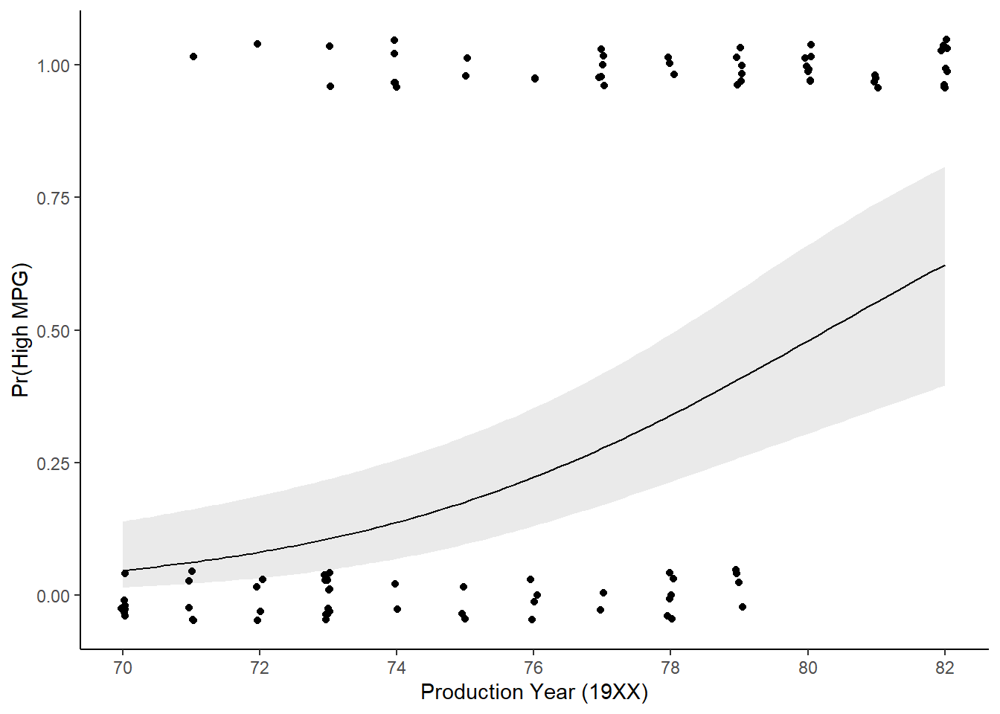
Can plot odds instead of probabilities using odds equation and coefficients from the model
\(odds = \frac{Pr(positive\:class|x_1)} {1 - Pr(positive\:class|x_1)}\)
NOTE: Harder to also plot raw data as scatter plot when plotting odds vs. probabilities. Maybe use second Y axis?
p_high <- p_high |>
mutate(.odds_high = .pred_high / (1 - .pred_high),
.odds_lower_high = .pred_lower_high / (1 - .pred_lower_high),
.odds_upper_high = .pred_upper_high / (1 - .pred_upper_high))
ggplot() +
geom_line(data = p_high, mapping = aes(x = year, y = .odds_high)) +
geom_ribbon(data = p_high,
aes(x = year, ymin = .odds_lower_high, ymax = .odds_upper_high),
linetype = 2, alpha = 0.1) +
scale_x_continuous(name = "Production Year (19XX)", breaks = seq(70,82,2)) +
ylab("Odds(High MPG)")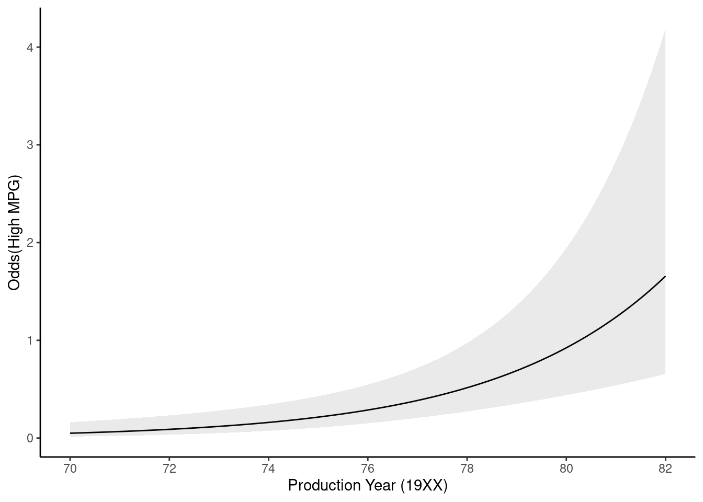
Odds ratio for year:
\(Odds\:ratio = e^{c*\beta_1}\)
exp(get_estimate(fit_lr_2, "year"))[1] 1.33943For every one year increase (holding beef constant), the odds of a car being categorized as high mpg increase by a factor of 1.3394301
You can do this for other values of c as well (not really needed here because a 1 year unit makes sense)
\(Odds\:ratio = e^{c*\beta_1}\)
exp(10 * get_estimate(fit_lr_2, "year"))[1] 18.58663For every 10 year increase (holding beef constant), the odds of a car being categorized as high mpg increase by a factor of 18.5866278
Testing parameter estimates
tidy() provides z-tests for the parameter estimatesfit_lr_2 |> tidy()# A tibble: 3 × 5
term estimate std.error statistic p.value
<chr> <dbl> <dbl> <dbl> <dbl>
1 (Intercept) -23.4 5.55 -4.23 2.38e- 5
2 beef_1 -2.49 0.316 -7.87 3.49e-15
3 year 0.292 0.0718 4.07 4.71e- 5The preferred test for parameter estimates from logistic regression is the likelihood ratio test
Anova() from the car package (as you learn in 610/710)car::Anova(fit_lr_2$fit, type = 3)Analysis of Deviance Table (Type III tests)
Response: mpg
LR Chisq Df Pr(>Chisq)
beef_1 239.721 1 < 2.2e-16 ***
year 20.317 1 6.562e-06 ***
---
Signif. codes: 0 '***' 0.001 '**' 0.01 '*' 0.05 '.' 0.1 ' ' 1Accuracy is a very common performance metric for classification models
How accurate is our two feature model?
type = "class"# in train
accuracy_vec(feat_trn$mpg, predict(fit_lr_2, feat_trn, type = "class")$.pred_class)[1] 0.9217687# in validate
accuracy_vec(feat_val$mpg, predict(fit_lr_2, feat_val, type = "class")$.pred_class)[1] 0.8877551You can see some evidence of over-fitting to the training set in that model performance is a bit lower in validation
Let’s take a look at the decision boundary for this model in the validation set
We need a function to plot the decision boundary because we will use it repeatedly to compare decision boundaries across statistical models
plot_decision_boundary <- function(data, model, x_names, y_name, n_points = 100) {
preds <- crossing(X1 = seq(min(data[[x_names[1]]]),
max(data[[x_names[1]]]),
length = n_points),
X2 = seq(min(data[[x_names[2]]]),
max(data[[x_names[2]]]),
length = n_points))
names(preds) <- x_names
preds[[y_name]] <- predict(model, preds)$.pred_class
preds[[y_name]] <- as.numeric(preds[[y_name]])-1
ggplot(data = data,
aes(x = .data[[x_names[1]]],
y = .data[[x_names[2]]],
color = .data[[y_name]])) +
geom_contour(data = preds,
aes(x = .data[[x_names[1]]],
y = .data[[x_names[2]]],
z = .data[[y_name]]),
color = "black", breaks = .5, linewidth = 2) +
geom_point(size = 2, alpha = .5) +
labs(x = x_names[1], y = x_names[2], color = y_name)
}Logistic regression produces a linear decision boundary when you consider a scatter plot of the points by the two features. Points on one side of the line are assigned to one class and points on the other side of the line are assigned to the other class. This decision boundary would be a plane if there were three features Harder to visualize in higher dimensional space.
We will contrast this decision boundary from logistic regression with other statistical algorithms in a bit.
Here is the decision boundary for this model in both train and validation sets
p_train <- feat_trn |>
plot_decision_boundary(fit_lr_2, x_names = c("year", "beef_1"), y_name = "mpg", n_points = 400)
p_val <- feat_val |>
plot_decision_boundary(fit_lr_2, x_names = c("year", "beef_1"), y_name = "mpg", n_points = 400)
plot_grid(p_train, p_val, labels = list("Train", "Validation"), hjust = -1.5)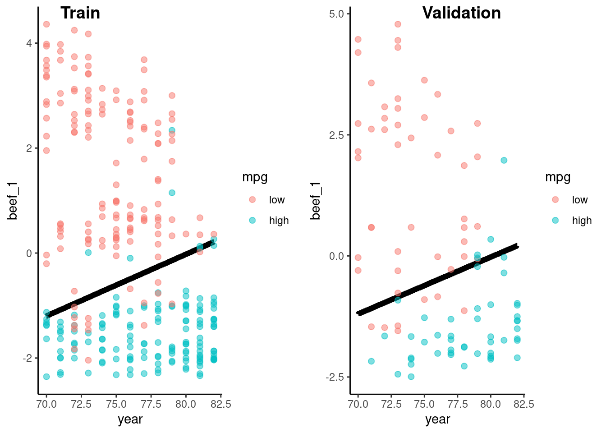
What if you wanted to try to improve this models predictions?
What if you wanted to have the best set of covariates to test the effect of year. [Assuming the best covariates are those that account for the most variance in mpg]?
For either prediction or explanation, you need to find this best model
We can compare model performance in validation set to find this best model
Let’s quickly fit another model we might have considered. This model will contain the 4 variables from our PCA but as individual features rather than one PCA component score (beef)
Make features for this model - No feature engineering needed because raw variables are all numeric already) - We will give the features dfs new names to retain the old features that included beef_1
rec_raw <- recipe(mpg ~ ., data = data_trn)
rec_raw_prep <- rec_raw |>
prep(data_trn)
feat_raw_trn <- rec_raw_prep |>
bake(data_trn)
feat_raw_val <- rec_raw_prep |>
bake(data_val)Fit PCA features individually + year
fit_lr_raw <-
logistic_reg() |>
set_engine("glm") |>
fit(mpg ~ cylinders + displacement + horsepower + weight + year,
data = feat_raw_trn)Which is the best prediction model?
accuracy_vec(feat_val$mpg, predict(fit_lr_2, feat_val)$.pred_class)[1] 0.8877551accuracy_vec(feat_raw_val$mpg, predict(fit_lr_raw, feat_raw_val)$.pred_class)[1] 0.8673469The PCA beef model fits best. The model with individual features likely increases overfitting a bit but doesn’t yield a reduction in bias because all the other variables are so highly correlated.
fit_lr_2 is your choice for best model for prediction (at least it is descriptively better)
If you had an explanatory question about year, how would you have chosen between these two tests of year in these two different but all reasonable models
car::Anova(fit_lr_2$fit, type = 3)Analysis of Deviance Table (Type III tests)
Response: mpg
LR Chisq Df Pr(>Chisq)
beef_1 239.721 1 < 2.2e-16 ***
year 20.317 1 6.562e-06 ***
---
Signif. codes: 0 '***' 0.001 '**' 0.01 '*' 0.05 '.' 0.1 ' ' 1car::Anova(fit_lr_raw$fit, type = 3)Analysis of Deviance Table (Type III tests)
Response: mpg
LR Chisq Df Pr(>Chisq)
cylinders 0.4199 1 0.51697
displacement 1.3239 1 0.24990
horsepower 6.4414 1 0.01115 *
weight 15.6669 1 7.553e-05 ***
year 27.0895 1 1.942e-07 ***
---
Signif. codes: 0 '***' 0.001 '**' 0.01 '*' 0.05 '.' 0.1 ' ' 1This is a start for us to start to consider the use of resampling methods to make decisions about how to best pursue explanatory goals.
Could you now test your year effect in the full sample? Let’s discuss.
Let’s switch gears to a non-parametric method we already know. KNN can be used as a classifier as well as for regression problems
KNN tries to determine conditional class possibilities for any set of features by looking at observed classes for similar values of for these features in the training set

The above figure illustrates the application of 3-NN to a small sample training set (N = 12) with 2 predictors
KNN can produce complex decision boundaries
Remember that we can control this bias-variance trade-off with K. As K increases, variance reduces (but bias may increase). As K decreases, bias may be reduced but variance increases. Choose a K that produces good performance in new (validation or test) data
These figures depict the KNN (and Bayes classifier) decision boundaries for the earlier simulated 2 class problem with X1 and X2
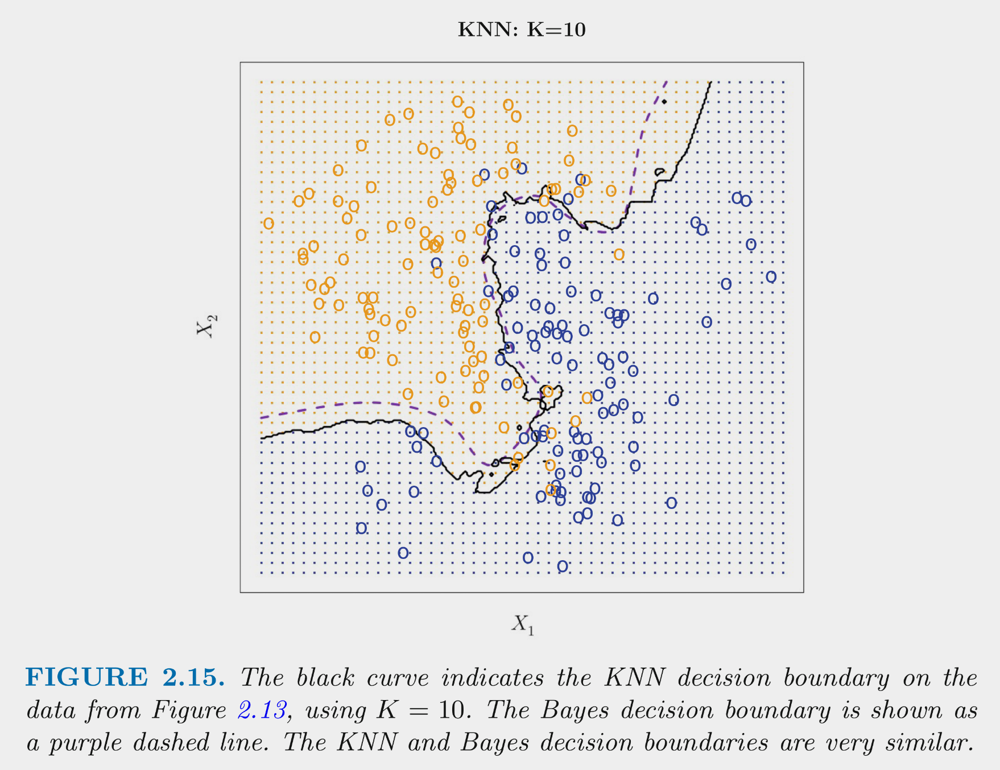

You can NOT make the decision about K based on training error
This figure depicts training and test error for simulated data example as function of 1/K
Training error decreases as 1/K increases. At 1 (K=1) training error is 0
Test error shows expected inverted U

Let’s demonstrate KNN using the Cars dataset
beef_1 PCA componentrec <- recipe(mpg ~ ., data = data_trn) |>
step_pca(cylinders, displacement, horsepower, weight,
options = list(center = TRUE, scale. = TRUE),
num_comp = 1, prefix = "beef_") |>
step_scale(year, beef_1)
rec_prep <- rec |>
prep(data = data_trn)
feat_trn <- rec_prep |>
bake(data_trn)
feat_val <- rec_prep |>
bake(data_val)Fit models with varying K.
# K = 1
fit_1nn_2 <-
nearest_neighbor(neighbors = 1) |>
set_engine("kknn") |>
1 set_mode("classification") |>
fit(mpg ~ beef_1 + year, data = feat_trn)
# K = 5
fit_5nn_2 <-
nearest_neighbor(neighbors = 5) |>
set_engine("kknn") |>
set_mode("classification") |>
fit(mpg ~ beef_1 + year, data = feat_trn)
# K = 10
fit_10nn_2 <-
nearest_neighbor(neighbors = 10) |>
set_engine("kknn") |>
set_mode("classification") |>
fit(mpg ~ beef_1 + year, data = feat_trn)
# K = 20
fit_20nn_2 <-
nearest_neighbor(neighbors = 20) |>
set_engine("kknn") |>
set_mode("classification") |>
fit(mpg ~ beef_1 + year, data = feat_trn)set_mode("classification")
Of course, training accuracy goes down with decreasing flexibility as k increases
# K = 1
accuracy_vec(feat_trn$mpg, predict(fit_1nn_2, feat_trn)$.pred_class)[1] 1# K = 5
accuracy_vec(feat_trn$mpg, predict(fit_5nn_2, feat_trn)$.pred_class)[1] 0.9489796# K = 10
accuracy_vec(feat_trn$mpg, predict(fit_10nn_2, feat_trn)$.pred_class)[1] 0.9455782# K = 20
accuracy_vec(feat_trn$mpg, predict(fit_20nn_2, feat_trn)$.pred_class)[1] 0.9285714In contrast, validation accuracy first increases and then eventually decreases as k increase.
K = 10 is preferred based on validation accuracy
# K = 1
accuracy_vec(feat_val$mpg, predict(fit_1nn_2, feat_val)$.pred_class)[1] 0.8163265# K = 5
accuracy_vec(feat_val$mpg, predict(fit_5nn_2, feat_val)$.pred_class)[1] 0.877551# K = 10
accuracy_vec(feat_val$mpg, predict(fit_10nn_2, feat_val)$.pred_class)[1] 0.8877551# K = 20
accuracy_vec(feat_val$mpg, predict(fit_20nn_2, feat_val)$.pred_class)[1] 0.8673469Let’s look at the decision boundaries for 10-NN in training and validation sets
p_train <- feat_trn |>
plot_decision_boundary(fit_10nn_2, x_names = c("year", "beef_1"), y_name = "mpg")
p_val <- feat_val |>
plot_decision_boundary(fit_10nn_2, x_names = c("year", "beef_1"), y_name = "mpg")
plot_grid(p_train, p_val, labels = list("Train", "Validation"), hjust = -1.5)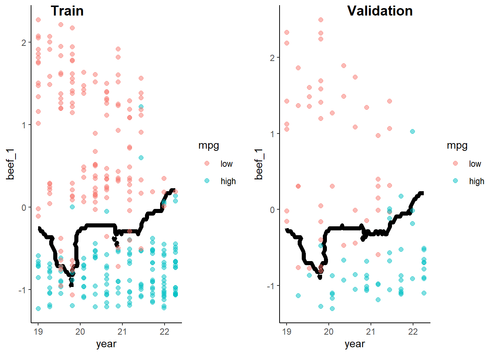
[How do you think the parametric logistic regression compares to the non-parametric KNN with respect to explanatory goals? Consider our (somewhat artificial) question about the effect of year.].{red} 2
Plot of probability of high_mpg by year, holding beef_1 constant at its mean based on 10-NN
predict() returns probabilities for high and low.p_high <-
tibble(year = seq(min(feat_val$year), max(feat_val$year), .1),
beef_1 = mean(feat_val$beef_1))
p_high <- p_high |>
bind_cols(predict(fit_10nn_2, p_high, type = "prob")) |>
glimpse()Rows: 33
Columns: 4
$ year <dbl> 18.99759, 19.09759, 19.19759, 19.29759, 19.39759, 19.49759,…
$ beef_1 <dbl> 0.004400185, 0.004400185, 0.004400185, 0.004400185, 0.00440…
$ .pred_low <dbl> 0.96, 0.99, 0.99, 0.99, 0.97, 0.87, 0.81, 0.81, 0.81, 0.81,…
$ .pred_high <dbl> 0.04, 0.01, 0.01, 0.01, 0.03, 0.13, 0.19, 0.19, 0.19, 0.19,…ggplot() +
geom_point(data = feat_val, aes(x = year, y = 2 - as.numeric(mpg)),
position = position_jitter(height = 0.05, width = 0.05)) +
geom_line(data = p_high, mapping = aes(x = year, y = .pred_high)) +
scale_x_continuous(name = "Production Year (19XX)",
breaks = seq(0, 1, length.out = 7),
labels = as.character(seq(70, 82, length.out = 7))) +
ylab("Pr(High MPG)")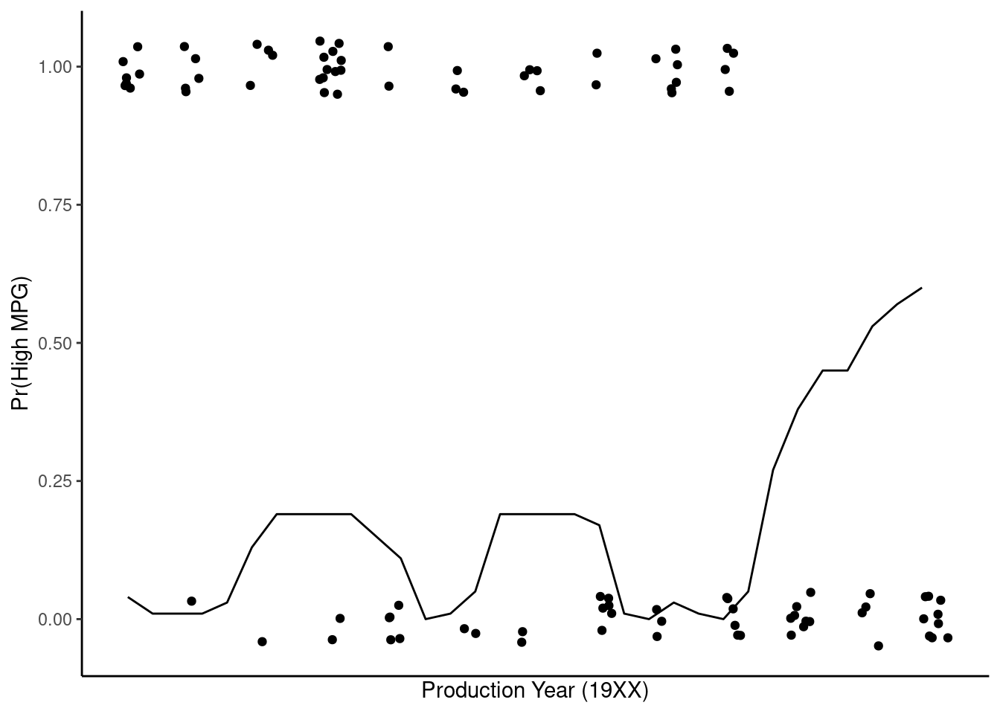
In a later unit, we will learn about feature ablation that we can combine with model comparisons to potentially test predictor effects in non-parametric models
LDA models the distributions of the Xs separately for each class
Then uses Bayes theorem to estimate \(Pr(Y = k | X)\) for each k and assigns the observation to the class with the highest probability
\(Pr(Y = k|X) = \frac{\pi_k * f_k(X)}{\sum_{l = 1}^{K} f_l(X)}\)
where
With a single feature, the probability of any class k, given X is:
\(Pr(Y = k|X) = \frac{\pi_k \frac{1}{\sqrt{2\pi\sigma}}\exp(-\frac{1}{2\sigma^2}(x-\mu_k)^2)}{\sum_{l=1}^{K}\pi_l\frac{1}{2\sigma^2}\exp(-\frac{1}{2\sigma^2}(x-\mu_l)^2)}\)
LDA is a parametric model, but is it interpretable?
Application of LDA to Cars data set with two predictors
Notice that LDA produces linear decision boundary (see James et al. (2023) for formula for discriminant function derived from the probability function on last slide)
rec <- recipe(mpg ~ ., data = data_trn) |>
step_pca(cylinders, displacement, horsepower, weight,
options = list(center = TRUE, scale. = TRUE),
num_comp = 1,
prefix = "beef_")
rec_prep <- rec |>
prep(data_trn)
feat_trn <- rec_prep |>
bake(data_trn)
feat_val <- rec_prep |>
bake(data_val)Fit the LDA in train
library(discrim, exclude = "smoothness")
discrim_linear() |>
set_engine("MASS") |>
translate()Linear Discriminant Model Specification (classification)
Computational engine: MASS
Model fit template:
MASS::lda(formula = missing_arg(), data = missing_arg())fit_lda_2 <-
discrim_linear() |>
set_engine("MASS") |>
fit(mpg ~ beef_1 + year, data = feat_trn)Accuracy and decision boundary
accuracy_vec(feat_val$mpg, predict(fit_lda_2, feat_val)$.pred_class)[1] 0.8469388p_train <- feat_trn |>
plot_decision_boundary(fit_lda_2, x_names = c("year", "beef_1"), y_name = "mpg", n_points = 400)
p_val <- feat_val |>
plot_decision_boundary(fit_lda_2, x_names = c("year", "beef_1"), y_name = "mpg", n_points = 400)
plot_grid(p_train, p_val, labels = list("Train", "Validation"), hjust = -1.5)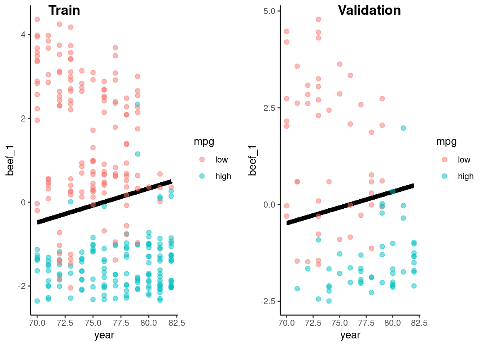
QDA relaxes one restrictive assumption of LDA
Application of RDA (Regularized Discriminant Analysis) algorithm to Car data set with two features
rda() from the klaR packagefrac_common_cov and frac_identity, that can each vary between 0 - 1
frac_common_cov = 1 and frac_identity = 0, this is an LDAfrac_common_cov = 0 and frac_identity = 0, this is a QDAHere is a true QDA using frac_common_cov = 1 and frac_identity = 0
discrim_regularized(frac_common_cov = 0, frac_identity = 0) |>
set_engine("klaR") |>
translate()Regularized Discriminant Model Specification (classification)
Main Arguments:
frac_common_cov = 0
frac_identity = 0
Computational engine: klaR
Model fit template:
klaR::rda(formula = missing_arg(), data = missing_arg(), lambda = 0,
gamma = 0)fit_qda_2 <-
discrim_regularized(frac_common_cov = 0, frac_identity = 0) |>
set_engine("klaR") |>
fit(mpg ~ beef_1 + year, data = feat_trn)Accuracy and decision boundary
accuracy_vec(feat_val$mpg,
predict(fit_qda_2, feat_val)$.pred_class)[1] 0.877551p_train <- feat_trn |>
plot_decision_boundary(fit_qda_2, x_names = c("year", "beef_1"), y_name = "mpg", n_points = 400)
p_val <- feat_val |>
plot_decision_boundary(fit_qda_2, x_names = c("year", "beef_1"), y_name = "mpg", n_points = 400)
plot_grid(p_train, p_val, labels = list("Train", "Validation"), hjust = -1.5)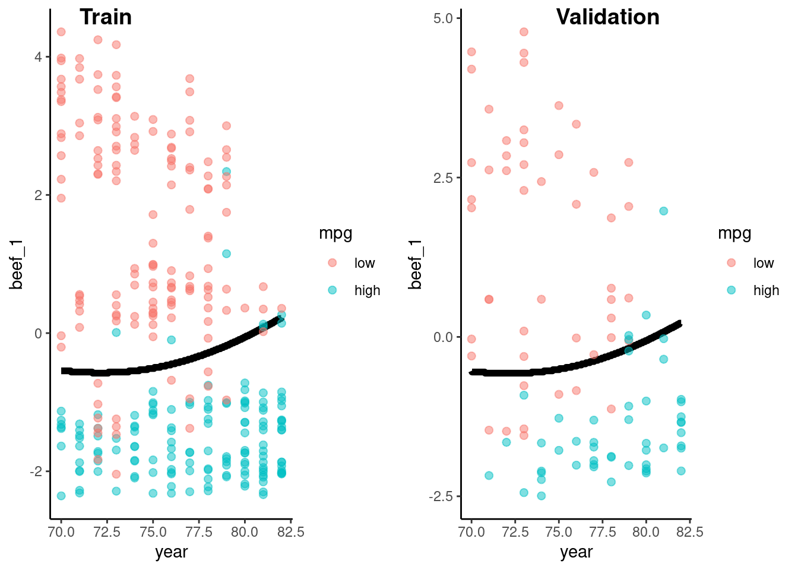
Both logistic and LDA are linear functions of X and therefore produce linear decision boundaries
LDA makes additional assumptions about X (multivariate normal and common \(\sum\)) beyond logistic regression. Relative performance is based on the quality of this assumption
QDA relaxes the LDA assumption about common \(\sum\) (and RDA can relax it partially)
Both QDA and LDA assume multivariate normal X so may not accommodate categorical predictors very well. Logistic and KNN do accommodate categorical predictors
KNN is non-parametric and therefore the most flexible
Logistic regression fails when classes are perfectly separated (but does that ever happen?) and is less stable when classes are well separated
LDA, KNN, and QDA naturally accommodate more than two classes
Logisitic regression requires relatively large sample sizes. LDA/QDA may perform better with smaller sample sizes if X is multivariate normal.
The Cars dataset had strong predictors and a mostly linear decision boundary for the two predictors we considered
This will not be true in many cases
Let’s consider a more complex two predictor decision boundary in the circle dataset from the mlbench package (lots of cool datasets for ML)
This will hopefully demonstrate that the key is to have a algorithm that can model the DGP
It will also demonstrate the power of tidymodels to allow us to fit many different statistical algorithms which all have their own syntax using a common syntax provided by tidymodels.
Example adapted to tidymodels from a demonstration by Michael Hahsler
library(mlbench)
set.seed(20140102)
data_trn <- as_tibble(mlbench.circle(200)) |>
rename(x_1 = x.1, x_2 = x.2) |>
glimpse()Rows: 200
Columns: 3
$ x_1 <dbl> -0.514721263, 0.763312056, 0.312073042, 0.162981535, -0.320294…
$ x_2 <dbl> 0.47513532, 0.65803777, -0.89824011, 0.38680494, -0.47313964, …
$ classes <fct> 1, 2, 2, 1, 1, 1, 1, 2, 2, 1, 2, 2, 1, 1, 1, 2, 2, 2, 2, 2, 2,…test <- as_tibble(mlbench.circle(200)) |>
rename(x_1 = x.1, x_2 = x.2)
data_trn |> ggplot(aes(x = x_1, y = x_2, color = classes)) +
geom_point(size = 2, alpha = .5)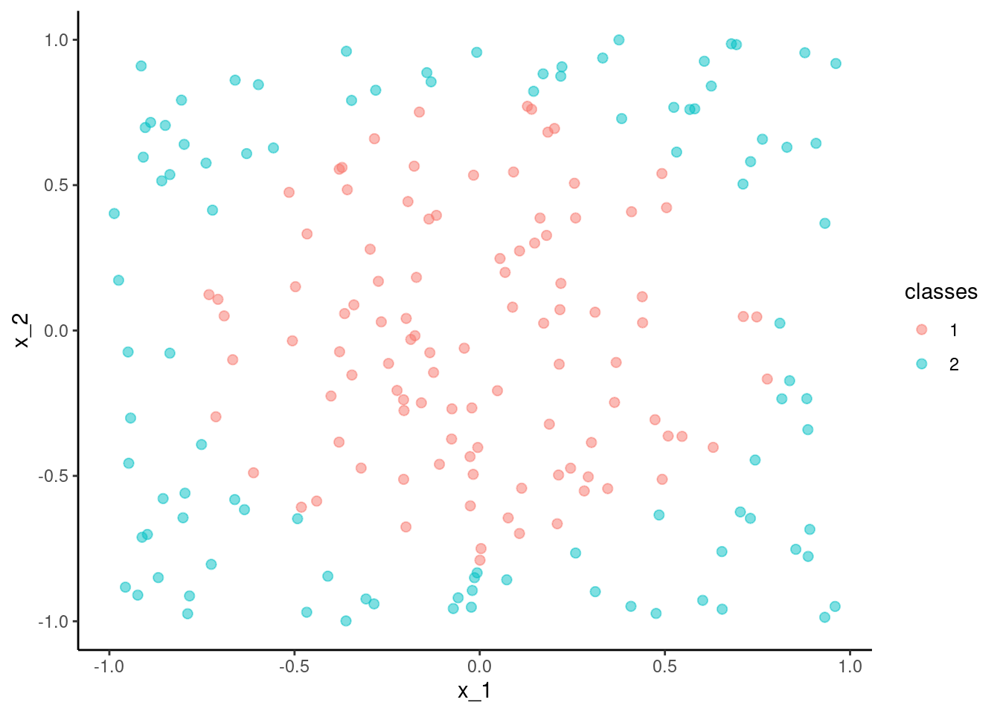
Fit
fit_lr_bench <-
logistic_reg() |>
set_engine("glm") |>
fit(classes ~ x_1 + x_2, data = data_trn)Accuracy and Decision Boundary
accuracy_vec(test$classes,
predict(fit_lr_bench, test)$.pred_class)[1] 0.62p_train <- data_trn |>
plot_decision_boundary(fit_lr_bench, x_names = c("x_1", "x_2"), y_name = "classes", n_points = 400)
p_test <- test |>
plot_decision_boundary(fit_lr_bench, x_names = c("x_1", "x_2"), y_name = "classes", n_points = 400)
plot_grid(p_train, p_test, labels = list("Train", "Test"), hjust = -1.5)
Fit
fit_knn_bench <-
nearest_neighbor() |>
set_engine("kknn") |>
set_mode("classification") |>
fit(classes ~ x_1 + x_2, data = data_trn)Accuracy and Decision Boundary
accuracy_vec(test$classes,
predict(fit_knn_bench, test)$.pred_class)[1] 0.985p_train <- data_trn |>
plot_decision_boundary(fit_knn_bench, x_names = c("x_1", "x_2"), y_name = "classes", n_points = 400)
p_test <- test |>
plot_decision_boundary(fit_knn_bench, x_names = c("x_1", "x_2"), y_name = "classes", n_points = 400)
plot_grid(p_train, p_test, labels = list("Train", "Test"), hjust = -1.5)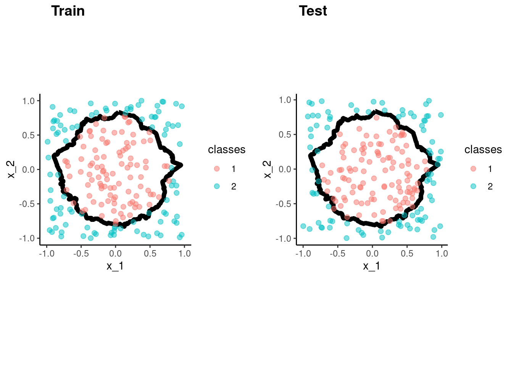
Fit
fit_lda_bench <-
discrim_linear() |>
set_engine("MASS") |>
fit(classes ~ x_1 + x_2, data = data_trn)Accuracy and Decision Boundary
accuracy_vec(test$classes,
predict(fit_lda_bench, test)$.pred_class)[1] 0.62p_train <- data_trn |>
plot_decision_boundary(fit_lda_bench, x_names = c("x_1", "x_2"), y_name = "classes", n_points = 400)
p_test <- test |>
plot_decision_boundary(fit_lda_bench, x_names = c("x_1", "x_2"), y_name = "classes", n_points = 400)
plot_grid(p_train, p_test, labels = list("Train", "Test"), hjust = -1.5)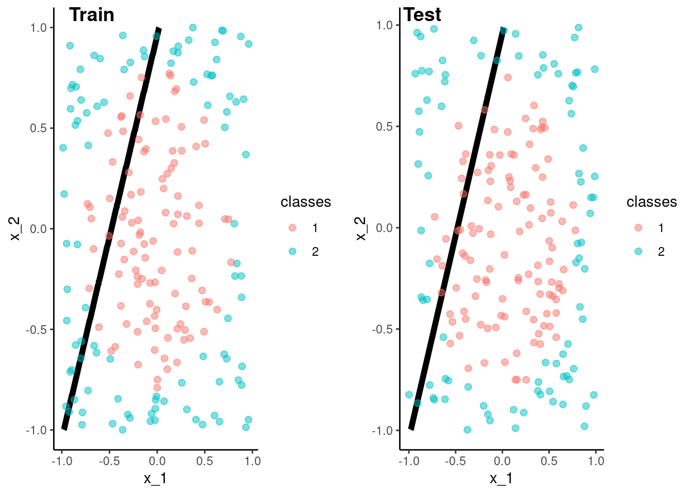
Letting rda() select optimal hyperparameter values
Fit
fit_rda_bench <-
discrim_regularized() |>
set_engine("klaR") |>
fit(classes ~ x_1 + x_2, data = data_trn)Accuracy and Decision Boundary
accuracy_vec(test$classes,
predict(fit_rda_bench, test)$.pred_class)[1] 0.985p_train <- data_trn |>
plot_decision_boundary(fit_rda_bench, x_names = c("x_1", "x_2"), y_name = "classes", n_points = 400)
p_test <- test |>
plot_decision_boundary(fit_rda_bench, x_names = c("x_1", "x_2"), y_name = "classes", n_points = 400)
plot_grid(p_train, p_test, labels = list("Train", "Test"), hjust = -1.5)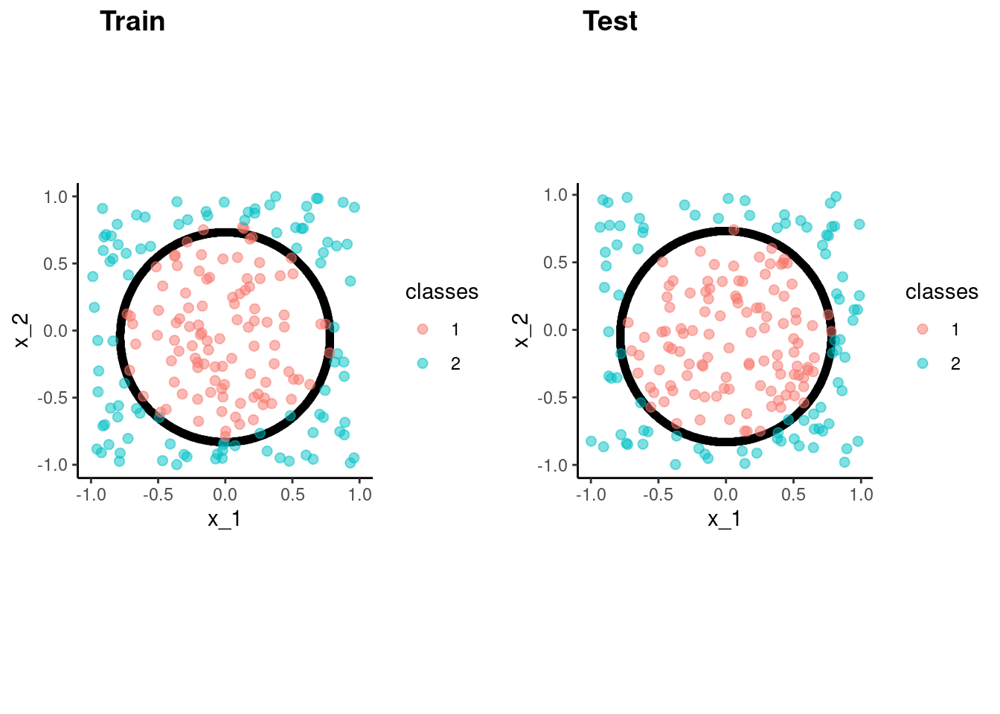
The Naïve Bayes classifier is a simple probabilistic classifier which is based on Bayes theorem
But, we assume that the predictor variables are conditionally independent of one another given the response value
This algorithm can be fit with either klaR or naivebayes engines
There are many tutorials available on this classifier
Fit
fit_bayes_bench <-
naive_Bayes() |>
set_engine("naivebayes") |>
fit(classes ~ x_1 + x_2, data = data_trn)Accuracy and Decision Boundary
accuracy_vec(test$classes,
predict(fit_bayes_bench, test)$.pred_class)[1] 0.99p_train <- data_trn |>
plot_decision_boundary(fit_bayes_bench, x_names = c("x_1", "x_2"), y_name = "classes", n_points = 400)
p_test <- test |>
plot_decision_boundary(fit_bayes_bench, x_names = c("x_1", "x_2"), y_name = "classes", n_points = 400)
plot_grid(p_train, p_test, labels = list("Train", "Test"), hjust = -1.5)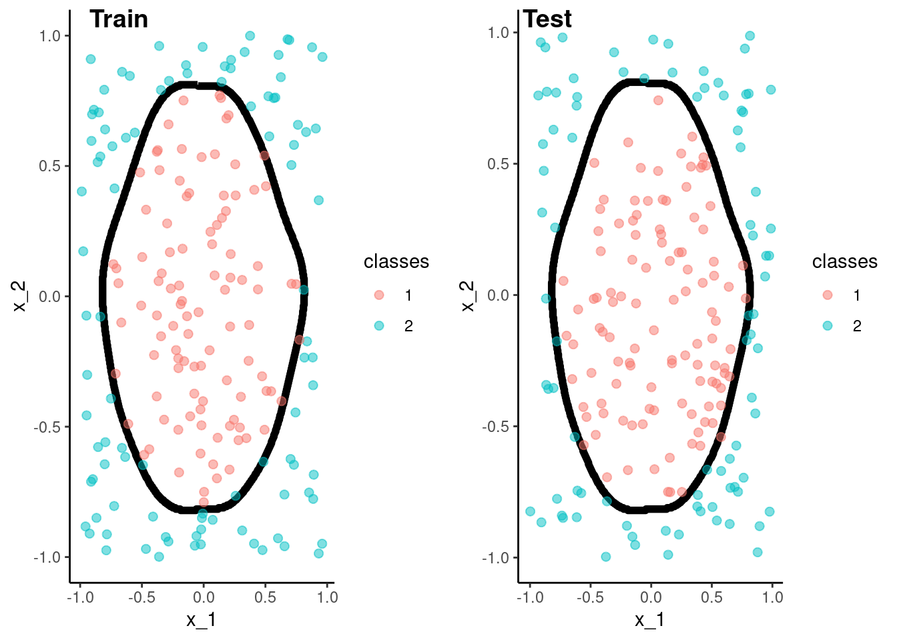
Fit
fit_rf_bench <-
rand_forest() |>
set_engine("ranger") |>
set_mode("classification") |>
fit(classes ~ x_1 + x_2, data = data_trn)Accuracy and Decision Boundary
accuracy_vec(test$classes,
predict(fit_rf_bench, test)$.pred_class)[1] 0.985p_train <- data_trn |>
plot_decision_boundary(fit_rf_bench, x_names = c("x_1", "x_2"), y_name = "classes", n_points = 400)
p_test <- test |>
plot_decision_boundary(fit_rf_bench, x_names = c("x_1", "x_2"), y_name = "classes", n_points = 400)
plot_grid(p_train, p_test, labels = list("Train", "Test"), hjust = -1.5)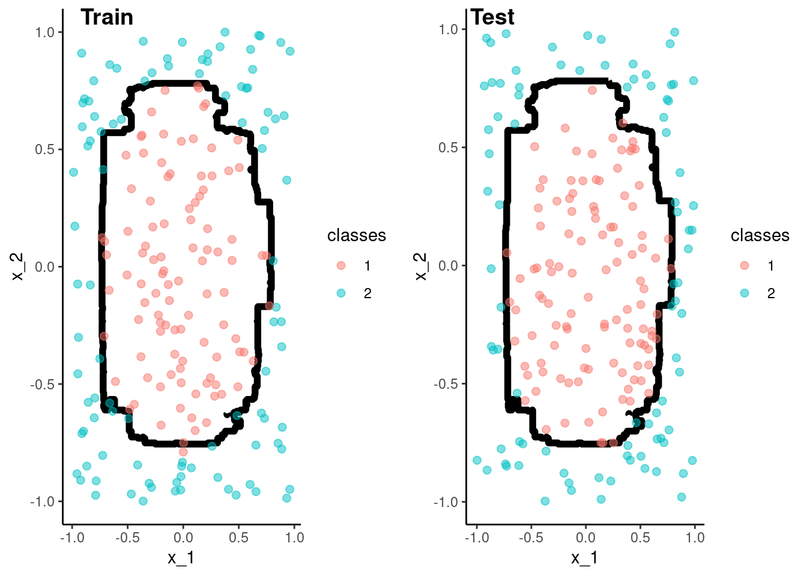
It is easy to fit a single layer neural network
We do this below with varying number of hidden units and all other hyperparameters set to defaults
Top 3:
Next 3:
Everyone else:
Bayes classifier
Could you explain this statement about the Bayes classifier?: Pr(Y=k|X=x0) for k=1:K
I really don’t understand Bayes classifier after searching additional information. terminology to this concept is confusing.
Logistic Regression
LDA/QDA
It would be great if you could talk through the broad logic of what generative classifiers are doing (e.g., James pg 141-2). I feel like I sort of get it; instead of estimating distributions of classes conditioned on features, they’re estimating distributions of features conditioned on classes, and then using Bayes’ rule? but it would be helpful to talk through this in the context of an example.
What is the difference between LDA and QDA? Comparison
What makes QDA model more flexible? And why that makes less bias but more potential for overfitting in QDA?
Comparisons among algorithms
I do not understand how logistic regression is different than linear discriminant analysis? It seems in LDA, the goal is to find an optimal line to classify on. However, isn’t logistic regression effectively doing the same by trying to create a model that is most predictive? How is the boundary line different?
I think I understand when you would use a LDA versus QDA, but I would like to know more about when to choose the logistic regression. Are LDA and QDAs completely different from the logistic regression conceptually?
We haven’t talk about logistic regression yet in psych610. What are some advantages and disadvantages of logistic regression compared to other classification methods?
Could you please go over the differences between LDA/QDA and logistic regression. I understand these parametric models are intermediate models between logistic regression and knn, but I don’t understand the advantage of using them over knn or logistic regression.
Categorical predictors
Can knn classification deal with data having a 2+ category outcome variable?
Also, best practices for dummy coding or creating grouped levels or if this is just trial and error and what seems to make the most sense.
Missing data
We had a lot of missing data this week. I am curious about the best ways to impute this data, and whether or not that should differ between classification and regression models
How to select the right algorithm for missing data?
Generic modeling questions
How do I figure out why my model is doing worse? How to think about this without visualization?
I’m still a bit confused about what would take place in modeling EDA vs. model fitting and evaluation. For example, if I want to separate the Titanic variable cabin into cabin letter and number, would that be a step that takes place in recipes only?
How can we quickly decide which predictors to include in our model when we have so many predictors and multicollinearity issues may happen?
Can we extrapolate more classification questions from the data we already collected? For example, if you are collecting heart rate of a person, while exercising. Can you then create a new variable that says if the person was tired or not?
Other questions
In 610, we plotted predicted points along with our predicted data points along in our final graphs. Do you recommend plotting predicted points on our graphs for publication?
Can you review the variable “beef” that you create in the “step_pca” function? How do the numeric variables get combined?
use cases for random forest models
For all of these classifiers, will they work differently on large datasets with different types of data such as texts and images? If yes, which ones may work faster with large text data and large image data?
These sample sizes are starting to get a little small. Fitted models will have higher variance with only 75% (N = 294) observations and performance in validation (with only N = 98 observations) may not be a very precise estimate of true validation error. We will learn more robust methods in the unit on resampling.↩︎
The logistic regression provides coefficients (parameter estimates) that can be used to describe changes in probability, odds and odds ratio associated with change in year. These parameter estimates can be tested via inferential procedures. KNN does not provide any parameter estimates. With KNN, we can visualize decision boundary (only in 2 or three dimensions) or the predicted outcome by any feature, controlling for other features but these relationships may be complex in shape. Of course, if the relationships are complex, we might not want to hide that. We will learn more about feature importance for explanation in a later unit.↩︎